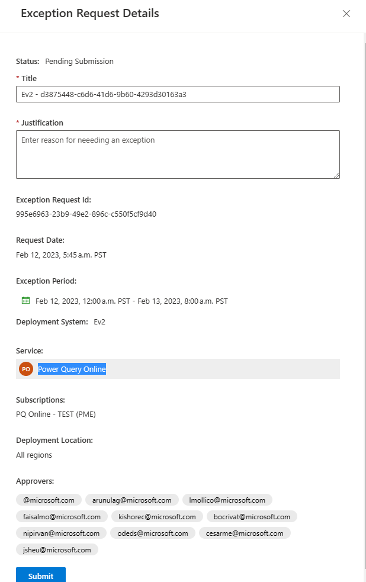
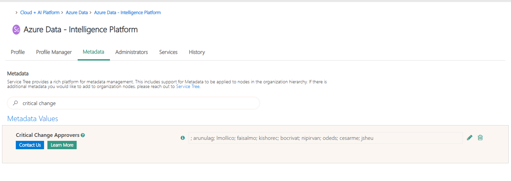
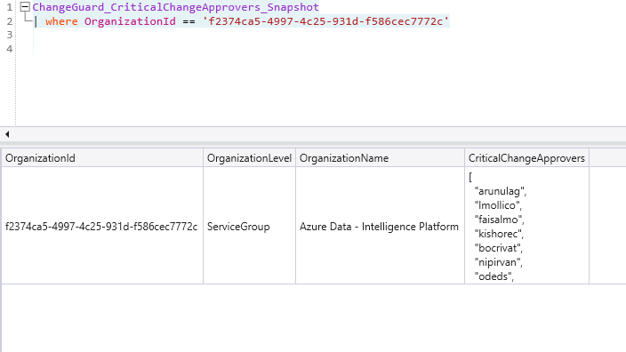

Exception Request Creation email failed to be sent
One possible reason for this would be invalid email addresses from approvers.(e.g.: ICM Incident - 367211386)
- Check the errors inside the logic apps.
- Resource Group: chggrd-api-prod-westus2
- Logic App: chggrd-api-wf-reqexc-prod
- e.g.:
{ "body": { "status": 400, "message": "One or more recipients are invalid.\r\nclientRequestId: 3f2a2596-3d82-46a4-9afa-22fecf91c485\r\nserviceRequestId: 23759cda-000f-0921-a537-34c32df681fd", "error": { "message": "One or more recipients are invalid.", "code": "ErrorInvalidRecipients", "originalMessage": "At least one recipient is not valid., Recipient '@microsoft.com' is not resolved. All recipients must be resolved before a message can be submitted." }, "source": "office365-wus2.azconn-wus2-001.p.azurewebsites.net" }
- e.g.:
- Check the approvers inside the Change Guard portal, for that specific Exception.
- e.g.:
- 
- If the portal has an invalid email address, go to ServiceTree, search for that service, go to Metadata and check the "Critical Change Approvers" email addresses there.
- e.g.:
- 
- Depending on which data is incorrect, it needs to either be corrected in ServiceTree or during import into our Kusto/SQL DB.
- To fix it on our side, we need to sanitize the data where are importing, using the Lens Orchestrator job: ChangeGuard Update Services Information.
- Add the logic to sanitize data at import.
- The data is imported from
cluster('genevareference.westcentralus.kusto.windows.net').database('Shared').DataStudio_ServiceTree_OrganizationMetadata_Snapshot| where Type == "CriticalChangeApprovers" - In our case we added a trim() for invalid characters when parsing the CriticalChangeApprovers string: > CriticalChangeApprovers = split(trim(@"[^a-z]+", replace_string(tolower(tostring(parse_json(Value)["CriticalChangeApprovers"]))," ","")),";")
- Rerun the Lens Orchestrator job to update the data in Kusto
- Check if the data is updated after the run
- e.g.: 
- The data is imported from
- Check that the data in SQL is also updated and correct
- Check [ServicesInfo].[v_SubscriptionOwners] for that ServiceId
- Check which Exceptions have invalid 'Approvers' inside the [ExceptionRequest].[ExceptionRequest] SQL table.
- You might need to manually fix the data for those exceptions.
- Fix the payload inside the logic apps runs that failed and rerun the trigger to send the emails.
- Add the logic to sanitize data at import.
Note
For this particular case, the ICM incident mentioned above is a good example on how to fix a similar scenario.